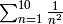
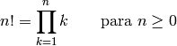
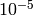
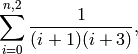
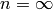
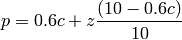
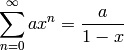

Control de flujo¶
Un programa consiste en una serie de sentencias que se ejecutan una detrás de otra siguiendo así el flujo natural. No obstante, puede convenirnos cambiar esta secuencia de ejecución y para ello se entroducen algunas sentencias de control de flujo. Estas nos permiten interactuar con el programa, tomar decisiones y ejecutar sentencias en un orden diferente al natural. Veamos las más importantes.
El bucle for¶
Realiza una misma acción o serie de acciones o sentencias repetidas veces. Una manera habitual de usar for es para recorrer con una variable cada uno de los elementos de una lista:
In [3]: for isla in ['La Gomera', 'Maui', 'Cuba', 'Sri Lanka']:
print("La isla de %s" % isla)
...:
...:
La isla de La Gomera
La isla de Maui
La isla de Cuba
La isla de Sri Lanka
En este caso isla es una variable muda (no declarada previamente) que va tomando el valor de cada uno de los elementos de la lista; el bucle finaliza cuando la lista se termina. También es posible hacerlo con una variable lista:
islas = ['La Gomera', 'Maui', 'Cuba', 'Sri Lanka']
for isla in islas:
print("La isla de %s" % isla)
""" Imprime:
La isla de La Gomera
La isla de Maui
La isla de Cuba
La isla de Sri Lanka
"""
Una función muy útil es la función range() que como ya vimos, crea automáticamente una lista de números enteros; con ella, podemos usar un bucle for para hacer cálculos con los elementos de una lista:
In [11]: for i in range(2,12,2):
....: print("El cubo de %d es %d" % (i, i**3) )
....:
....:
El cubo de 2 es 8
El cubo de 4 es 64
El cubo de 6 es 216
El cubo de 8 es 512
El cubo de 10 es 1000
El resultado de antes se puede obtener también iterando los índices de la lista en lugar de lo elementos, creando una lista de los índices usando range():
for i in range(len(islas)):
print("%d- La isla de %s" % (i, islas[i]))
""" Imprime:
0- La isla de La Gomera
1- La isla de Maui
2- La isla de Cuba
3- La isla de Sri Lanka
"""
Aquí, con la función range() hemos creado una lista de tantos números como elementos tiene la lista “islas”, desde 0 hasta len(islas) (la longitud de la lista) e iterar los índices.
Los bucles for nos permiten crear nuevas listas fácilmente:
In [23]: b = [2.3, 4.6, 7.5, 10.]
In [24]: from math import log10 # Importo la función ``log10`` del módulo ``math``
In [25]: c = [log10(x) for x in b]
In [26]: print(c)
[0.36172783601759284, 0.66275783168157409, 0.87506126339170009, 1.0]
al hacer esto hemos creado una nueva lista que contiene el logaritmo de base 10 de cada uno de números en la lista b. Con respecto a la función logaritmo, generalmente se denota el de base 10 como acabamos de ver, mientras que la función log() calcula el logaritmo natural o de base e. Con la función log() también se puede calcular el logaritmo de cualquier base, indicándola como un segundo parámetro; por ejemplo, para calcular el logaritmo de base 3 de 5 haríamos log(5,3).
Una aplicación muy interesante es suma de series de números. Supongamos que queremos calcular el sumatorio . Debemos definir una variable muda en la que vamos sumando o acumulando los términos del sumatorio:
a = 0.0 # Variable muda, para ir acumulando los términos de la suma
for n in range(1,11):
term = 1/n**2.0 # Término del sumatorio
a = term + a # Acumulamos el término
print("%3d %10.6f %10.6f" % (i, term, a))
"""RESULTADO
n termino_n valor sumatorio
------------------------------
1 1.000000 1.000000
2 0.250000 1.250000
3 0.111111 1.361111
4 0.062500 1.423611
5 0.040000 1.463611
6 0.027778 1.491389
7 0.020408 1.511797
8 0.015625 1.527422
9 0.012346 1.539768
10 0.010000 1.549768
"""
En este ejemplo definimos una variable a con valor inicial cero para ir acumulando en ella cada uno de los términos de la suma, que metemos en la variable term y sumándola en cada ciclo del bucle hasta que termina. El valor final de la suma será el que tenga la variable a al terminar el bucle.
Sentencias if-then-else¶
Realizan una o varias operaciones si una determinada condición es cierta. De no cumplirse, se pueden realizar otras operaciones.
c = 12
if c>0: # comprueba si es positivo
print("La variable c es positiva")
elif c<0: # si no lo es, comprueba si es negativo
print("La variable c es negativa")
else: # Si nada de lo anterior se cumple, haz lo siguiente
print("La variable c vale 0")
En el ejemplo anterior, primero se define una variable c con valor entero 12 y luego se emplea la sentencia if para comprobar si es positivo, luego se usa elif para que en caso de no ser cumplirse el if anterior, compruebe si es negativa. Si no se cumple ninguna condición anterior y sólo en ese caso, se ejecutan las sentencias que vienen después de else. Hay que notar que en caso de cumplirse la primera condición if, el bucle se interrumpe y el intérprete ya no continúa comprobando las posibles condiciones elif (pueden haber varias) o else final.
Es muy importante notar nuevamente los bloques de identación o espacios que separan los condicionales if-then-else en el ejemplo anterior. Al ejecutarse el código y en contrarse el primer if, el intérprete de Python sabe que todo lo que viene después de los “:” e identado con espacios es lo que debe ejecutarse en caso de cumplirse la condición y esto termina cuando se encuentra con un bloque de identación inferior, que en este caso es la sentencia elif. Veamos lo anterior con un ejemplo usando solo la sentencia if:
a, b = 9.3, 12.0
if a > b:
c = a - b
print ("La variable a es mayor que b")
print ("El valor de c es %f" % c)
En este ejemplo se comprueba si a es mayor que b y en ese caso se calcula su diferencia e imprime un mensaje. Luego se imprime el valor de c en otra sentencia, pero como esa línea está ya fuera del bloque de identación del if, el condicional termina justo ante y esa sentencia se intentará imprimir aunque la condición del if no se cumpla, ya que no está contenido en ella. El código correcto sería simplemente
a, b = 9.3, 12.0
if a > b:
c = a - b
print ("La variable a es mayor que b")
print ("El valor de c es %f" % c)
Así, el valor de c sólo imprime si el condicional se cumple.
Sin embargo, cuando después de un condicional hay una única sentencia, ésta se puede escribir en la misma línea:
if a > b: print ("La variable a es mayor que b")
else: print ("La variable a es menor o igual que b")
El bucle while¶
Se ejecutan una o varias operaciones mientras cierta condición que definimos sea cierta. Por ejemplo:
cuentas = 0
while cuentas < 10:
print(cuentas)
cuentas = cuentas + 1
0
1
2
3
4
5
6
7
8
9
En este ejemplo se define inicialmente un valor 0 para la variable cuentas y su valor se va redefiniendo, aunmentado su valor en 1 e imprimiéndolo. Mientras sea menor que 10 las sentencias dentro del bucle while seguirán ejecutándose y se detendrá cuando valga 10, algo que podemos comprobar después del bucle:
print(cuentas)
# Imprime 10
Veamos otro ejemplo. Supongamos que tenemos unos ahorros en el banco y queremos saber el tiempo que nos llevará tener cierta cantidad gracias a los intereses. Lo que hacemos es crear un bucle while en el que añadiremos anualmente los intereses, contando los años. Cuando lleguemos a la cantidad deseada el bucle se detendrá y tendremos los años que nos llevaría:
mis_ahorros = 100 # Partimos de 100 euros
interes = 1.05 # Interés del 5% anual
anhos = 0 # Tiempo de inicio, cuando tenemos 100 euros
while mis_ahorros < 500: # Queremos llegar a tener 500 euros
mis_ahorros = mis_ahorros * interes # Añado los intereses anuales a los ahorros
anhos = anhos + 1 # Añado un año a la cuenta de años ya que
# cada ciclo while equivale a un año.
print("Me llevará %d anhos ahorrar %d euros." % (anhos, mis_ahorros))
# Resultado
# Me llevará 33 anhos ahorrar 500 euros.
Podemos utilizar while con la condicion de que no se cumpla usando while not:
x = 0
while not x == 10:
x = x + 1
print("x = %d" % x)
# Resultado
x = 1
x = 2
x = 3
x = 4
x = 5
x = 6
x = 7
x = 8
x = 9
x = 10
Sin embargo, hay que tener cuidado cuando se comparan floats entre sí, ya que debido a precisión finita de los ordenadores, es posible que una determinada igualdad nunca se cumpla exactamente. Veamos este ejemplo:
x = 0.0
# Mientras x no sea exactamente 1.0, suma 0.1 a la variable *x*
while not x == 1.0:
x = x + 0.1
print("x = %19.17f" % x)
# Resultado
x = 0.10000000000000001
x = 0.20000000000000001
x = 0.30000000000000004
x = 0.40000000000000002
x = 0.50000000000000000
x = 0.59999999999999998
x = 0.69999999999999996
x = 0.79999999999999993
x = 0.89999999999999991
x = 0.99999999999999989 <-- El bucle while debió detenerse aquí, pero no lo hizo
x = 1.09999999999999987
x = 1.19999999999999996
x = 1.30000000000000004
.
.
.
y así sucesivamente, no se pararía nunca. El código anterior produce un bucle infinito porque la condición x == 1.0 nunca se da exactamente debido a la precisión limitada de los ordenadores, el valor más cercano es 0.9999999999 pero no 1.0. La conclusión es que es preferible no comprar nunca *floats* exactamente. Una opción es usar intervalos de precisión, por ejemplo:
x = 0.0
while abs(x - 1.0) > 1e-8:
x = x + 0.1
print("x = %19.17f" % x)
# Resultado
x = 0.10000000000000001
x = 0.20000000000000001
x = 0.30000000000000004
x = 0.40000000000000002
x = 0.50000000000000000
x = 0.59999999999999998
x = 0.69999999999999996
x = 0.79999999999999993
x = 0.89999999999999991
x = 0.99999999999999989
Atrapando los errores¶
Hemos visto que cuando existe algún error en el código, Python detiene la ejecución y nos devuelve una excepción o mensaje de error indicándonos que fué lo que ocurrió. Por ejemplo, supongamos que por algún motivo hacemos una división por cero:
In [4]: a, b = 23, 0
In [5]: a/b
---------------------------------------------------------------------------
ZeroDivisionError Traceback (most recent call last)
/home/japp/<ipython console> in <module>()
ZeroDivisionError: integer division or modulo by zero
al hacer esto, nos avisa del error indicando el tipo en la última línea, ZeroDivisionError, terminando la ejecución. Que Python nos dé tanta información al ocurrir una excepción es muy útil pero muy a menudo sabemos que estos errores pueden ocurrir y lo ideal es estar preparado capturando la excepción y actuar en consecuencia en lugar de interrumpir el programa. Para hacer esto podemos usar la sentencia Try-except, que no permiter “probar” (Try) una sentencia y capturar un error y hacer algo al respecto (except) en caso de haberlo en lugar de detener el programa. Para el caso anterior podemos hacer lo siguiente:
In [7]: a, b = 23, 0
In [8]: try: a/b
...: except: print("Hay un error en los valores de entrada")
Ahora el código intenta ejecutar a/b y de haber algún tipo de error imprime el mensaje indicado y sigue adelante en lugar abortar el programa. Al hacer esto hemos “capturado” la excepción o error evitando que el programa se detenga, suponiendo que éste puede continuar a pesar del error. Nótese que de esta manera no sabemos qué tipo de error ha ocurrido, que antes se indicaba con la clave ZeroDivisionError, que es uno de los muchos tipos de errores que Python reconoce. Si quisiésemos saber exactamente qué tipo de error ocurrió, debemos especificarlo en except:
a, b, c = 23, 0, "A"
try:
a/b
except ZeroDivisionError:
print("Error, division por cero")
except TypeError:
print("Error en el tipo de dato")
# Resultado:
# Error, division por cero
try:
a/c
except ZeroDivisionError:
print("Error, division por cero")
except TypeError:
print("Error en el tipo de dato")
# Resultado:
# Error en el tipo de dato
De esta manera, sabemos exactamente qué tipo de error se cometió en cada caso, una división por cero o un error en el tipo de dato (que es lo que indica TypeError). Naturalmente, si no ocurriese ninguno de estos errores específicamente, Python daría un error y terminaría el programa de manera habitual. Consulta la documentación oficial de Python para más información sobre la captura de excepciones y los tipos de errores reconocidos.
Ejercicios¶
Escribe un progama que calcule el factorial de un número n cualquiera. Es decir, calcula:

Crea una lista con lista con 10 números con valores distintos y arbitrarios, con valores de 0 a 100. Crea una función que encuentre el mayor y que dé su posición en la lista.
Con la lista anterior, crear una lista nueva que incluya los números que son primos y otra que incluya sus índices en la lista original.
Crea un programa que calcule el valor medio y la desviación estándar de una lista cualquiera de números.
Genera una lista con lista con 100 números enteros aleatorios de -100 a 100 con la función randint (haz from numpy.random import randint y luego nums = randint(-100, 100, 100). Separa en tres listas distintas los números negativos, los positivos y los mayores de +50, de manera que la suma de los números de cada lista no sea mayor que 200, es decir, completar las listas mientras que no se llegue a ese número.
Calcular el valor de
 empleando la siguiente expresión:
empleando la siguiente expresión:
Modifica el programa anterior para obtener el valor de
con una precisión determinada (por ejemplo ) comparado con el valor real tomado del módulo math.Haz un programa que calcule volumen de una esfera, cilindro o un cono. El programa debe preguntar primero qué es lo que se desea calcular y luego pedir los datos necesarios según lo que se elija.
Dada la lista de notas de los alumnos de una clase, decir quien ha sacado aprobado (más de 5), notable (más de 7), sobresaliente (más de 9) o ha suspendido.
Alumno
Nota
Miguel
6.7
Maria
4.9
Iballa
9.8
Fran
5.0
Luisa
6.7
Ruyman
8.0
Ana
6.2
Suponiendo que todos los nombres de chica terminan con “a” (lo que casualmente en este ejemplo es cierto), decir si cada uno es chico o chica.
Escribir un programa que calcule la suma de los elementos necesarios de la serie:

para obtenerla con 5 cifras significativas. La suma hasta  es 0.5. Como resultado dar el valor de la suma y el número n de sumandos sumados.
La nota final de la asignatura de Computación Científica (p) se calcula añadiendo a la nota del examen final (z) una ponderación de la evaluación contínua (c) a lo largo del curso de la forma:

El alumno estará aprobado cuando la nota final p sea mayor o igual a cinco, siempre que z supere un tercio de la nota máxima (z>10/3); en caso contrario, se queda con p=z. Un grupo de alumnos ha obtenido las siguientes calificaciones en la evaluación contínua y en el examen final:
c
8.2 0.0 9.0 5.0 8.4 7.2 5.0 9.2 4.9 7.9
z
7.1 5.1 8.8 3.1 4.6 2.0 4.1 7.4 4.4 8.8
Hacer un programa que calcule sus notas finales indicando además quién ha aprobado y suspendido. Calcular también la nota media de la evaluación contínua, del examen final y de la nota final. En todos los resultados debe mostrarse una única cifra decimal.
Dada la serie geométrica cuya suma exacta es:

válida siempre que 0 < x < 1 y siendo a un número real cualquiera, escribir un programa que calcule esta suma con diez cifras significativas solamente para cualquier valor de x y a, comprobando que se cumple la condición necesaria para x. Dar como resultado el valor de la suma y el número de sumandos sumados para obtenerla.